EM : Forces de Laplace et induction
I. Forces de Laplace
Torseur des forces de Laplace :
- Résultante : $\overrightarrow{F_L}$
- Moment en O : $\overrightarrow{\Gamma_L}(O) = \int_{circuit} \overrightarrow{OM}\land [i\overrightarrow{d\ell}\land \vec B]$
II. Induction électromagnétique
- Induction de Lorentz : circuit mobile, champ magnétique permanent
- Induction de Neumann : circuit fixe, champ magnétique variable
Méthode générale d'étude
- Orientation du circuit
- Analyse quantitative du fonctionnement du dispositif : loi de Lenz
- Calcul de la fem induite $e_{ind}$ : loi de Faraday
- Bilan électrique
- Bilan mécanique : forces de Laplace + PFD
- Vérification des hypothèses
III. Inductance propre et inductance mutuelle
Calcul d'une inductance propre
- Orientation du circuit
- Calcul du champ propre créé par le circuit
- Calcul du flux propre
- Indentification de $L$
fém d'auto-induction :
$$e_{propre} = -\frac{d\Phi_{propre}}{dt} = -\frac{dLi}{dt}$$
Cas d'un circuit filiforme indéformable (bobine rigide) :
$$e_{propre} = -L\frac{di}{dt}$$
Energie électromagnétique : $E_m = \frac{1}{2} Li^2$
Deux circuits

$M$ coefficient d'inductance mutuelle entre les deux circuits, $M^2 < L_1 L_2$
Flux magnétiques :
- Flux total à travers $(\mathcal C_1)$ : $\Phi_1 = L_1 i_1 + M i_2$
- Flux total à travers $(\mathcal C_2)$ : $\Phi_1 = L_2 i_2 + M i_1$
fem induite
- Circuit (1): $e_1 = - \frac{d\Phi_1}{dt} = -L_1 \frac{di_1}{dt} - M\frac{di_2}{dt}$
- Circuit (2): $e_2 = - \frac{d\Phi_2}{dt} = -L_2 \frac{di_2}{dt} - M\frac{di_1}{dt}$
$E_m = \frac{1}{2}L_1 i_1^2 + \frac{1}{2}L_2 i_2^2 + M i_1 i_2$